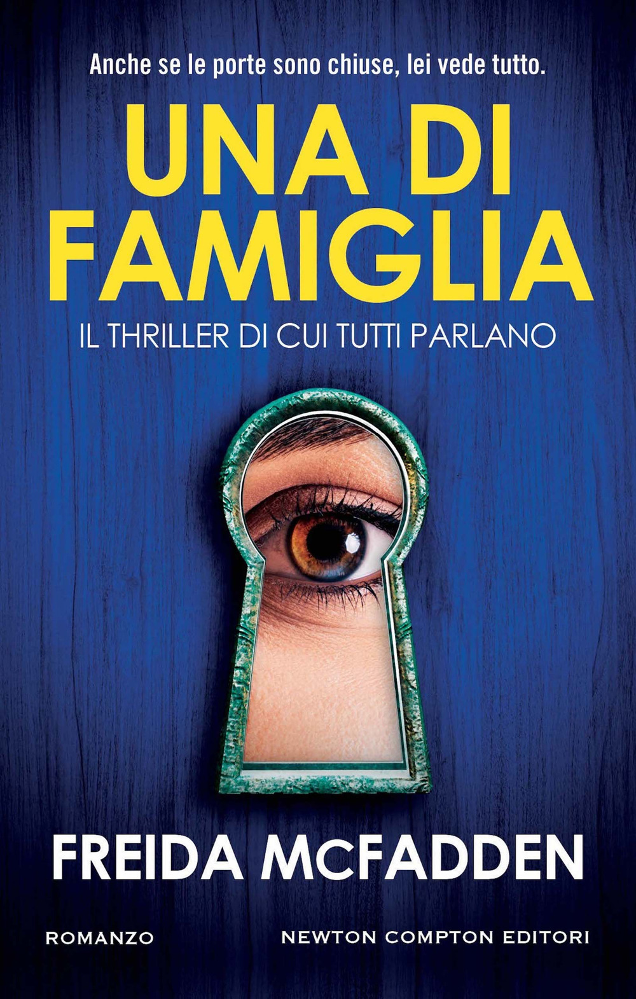

Se le atmosfere di questo libro ti sono piaciute, prova a leggere questo classico:

Se invece sei più interessata alla parte thriller, leggi questo:

Trama: Chloe Hughes non vede l’ora di dare una svolta alla sua vita. Sogna di diventare una scrittrice di successo e di vivere in una grande città, così, quando viene ammessa all’antica e prestigiosa Dern University, è certa che il destino sia finalmente dalla sua parte. Ma l’arrivo al campus è un brusco risveglio. Se da un lato l’università la conquista con i soffitti a volta, i salici che sfiorano il fiume e quell’atmosfera che profuma di tweed e camicie inamidate, dall’altro il suo appartamento è decrepito e le coinquiline tutt’altro che accoglienti. Tutto cambia quando incontra Clara Holland: capelli biondi perfetti, sorriso da copertina, una vita da sogno e mezzo milione di follower sui social. Clara la prende sotto la sua ala e la introduce nel suo esclusivo circolo di amiche: le Golden. Un mondo di lusso, privilegi e regole non dette, dove tutto sembra possibile. Ma dietro la facciata dorata, qualcosa non torna. Chloe comincia a notare dinamiche strane, tensioni sottili, sguardi che si fanno inquietanti. Poi, dopo una festa indimenticabile, una ragazza scompare nel nulla. Ora Chloe sa che dietro l’apparenza scintillante si cela qualcosa di oscuro. Ma quanto è disposta a rischiare per non rinunciare al posto che ha tanto faticato a conquistare?
Cosa ne penso io: Finale shock, per tutto il libro pensavo di aver capito come sarebbe finito tutto e invece...
Olivia mia protetta, sapevo non sarebbe finita bene per lei ma ci ho sperato fino all'ultimo, rappresentava troppo la voce della ragione. Quando l'ho concluso sono rimasta con un senso di profonda tristezza e disullisione verso il mondo. Love-bombing, tossicità, sette, manipolazioni... c'è tutto ciò che mi fa paura in un'amicizia. Lo stile di scrittura è una meravigliosa unione tra un podcast true crime e una puntata di "Pretty Little Liars".
★ ★ ★ ★ ☆
Se le atmosfere di questo libro ti sono piaciute, prova a leggere questo classico:
Se invece sei più interessata alla parte thriller, leggi questo:
